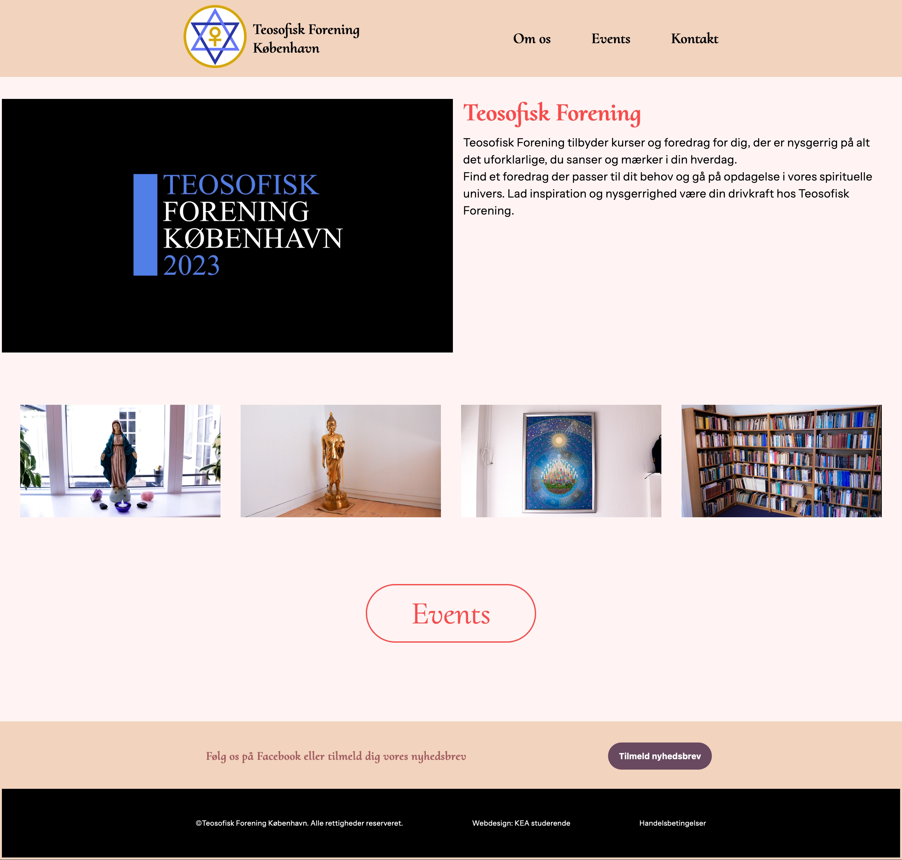

TEMA5 - Grundlæggende Indhold
Videosite
I Tema5 lærte vi om, hvordan man bruger forskellige udstyr til optagelse af video og lyd. I Videosite opgaven blev vi inddelt i grupper af 2, hvor vi fik til opgave at filme, interviewe og klippe en video om en person med en passion i Premier Pro.
Min rolle var at stå for ekstern lyd under interviewet, og vi begge klippede et udkast af videoen til vores individuelle Videosite, hvor der på siden skulle indgå: stillphotos, video via. "video tag" samt embed til Youtube og en filmplakat. Filmplakaten udarbejdede jeg i Adobe XD. Det mest udfordrende ved denne opgave var at filme fra en god vinkel, da både lys, hvid balance og baggrundslyde kunne have en indvirkning. Dette var jeg ekstra opmærksom på fra Tema1, hvor vi udarbejdede en Titelsekvens. I Tema5 fortryder jeg dog, at jeg ikke var mere opmærksom på vinklen, da vi filmede selve interviewet, da mit primære fokus lå på rules of thirds og lysindfald. Det er derfor noget, jeg ville tage med mig som eftertanke til fremtidige opgaver.
Virksomhedssite

I Tema5 fik vi til opgave at redesigne en eksisterendes virksomhedssite i grupper af 4.
Vi var ude at interviewe, filme/klippe/redigere en video til deres site, som skulle byde modtageren velkommen. Vores fokus på redesignet var at nå ud til en yngre målgruppe. Dette gjorde vi ved at lave en generel desk-research af virksomheden og dernæst undersøge brugerrejsen på et site.
Vi delte opgaven op i, at alle stod for 1 til 2 html'er og css dertil. Scrum-master stod for at oprette et Trello-board til overblik af opgaver, man kunne påtage, hvor lang vi i processen var samt overblik over, hvem der gjorde hvad, hvornår.
Min rolle i denne opgave var at lave wireframes, prototype, moodboard og styletile af eksisterende site og redesign. Layout diagram for de 2 html sider, jeg stod for (index/forsiden og kontakt). 5-second test af redesign, heuristisk test af virksomhedssitet. Billedmateriale, som jeg redigerede i photoshop. Synopsis, præmis, logline, interviewguide og produktionsplan. Storyboard, micro- og copy, samt kodning og en lille refleksion af git/github/sitet. Derudover påtog jeg mig opgaven at udfylde proces-dokumentationen og holde overblik over opgaven, så vi havde en fyldestgørende opgave med orden og struktur.